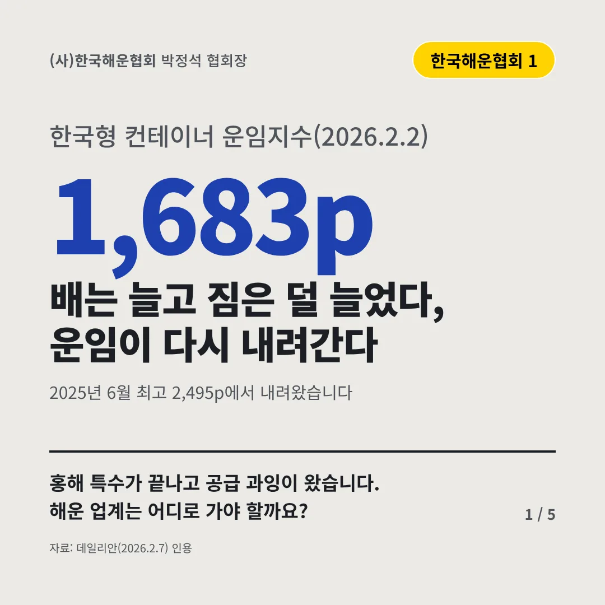
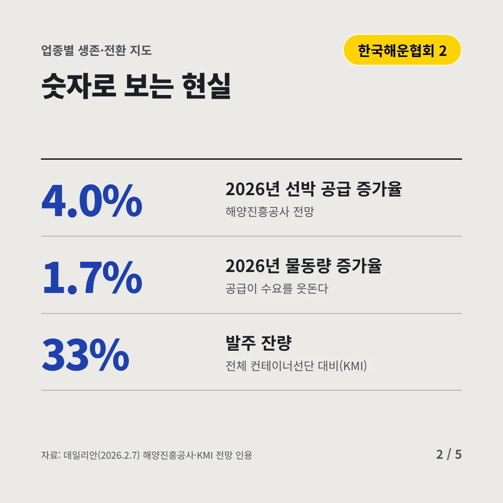
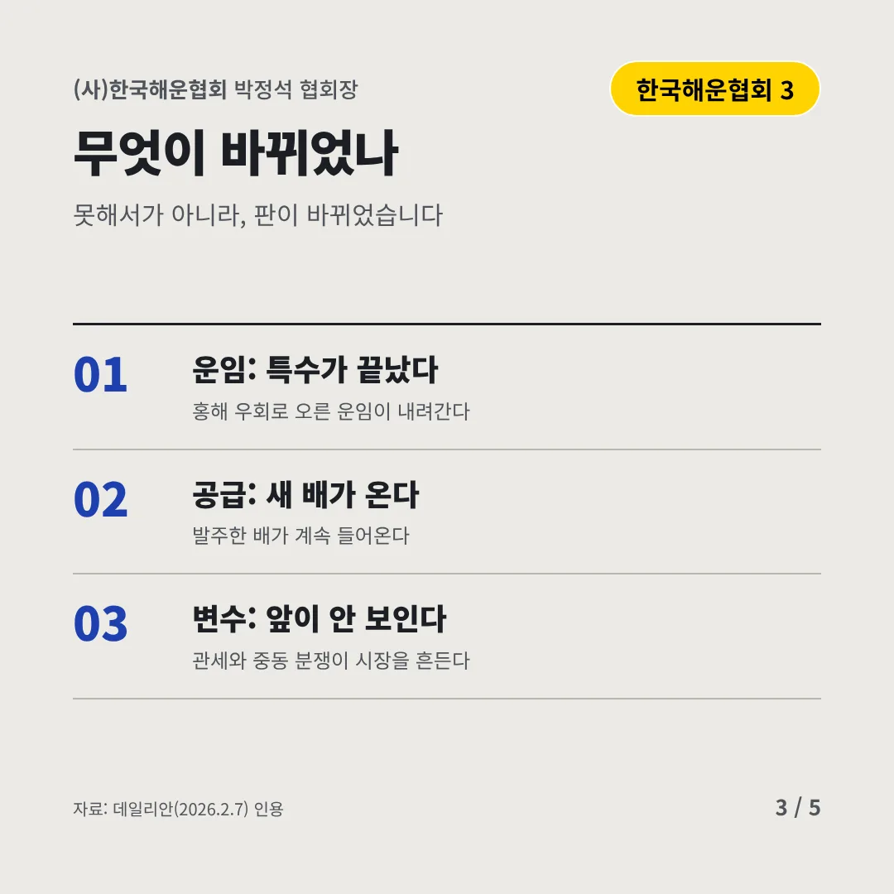
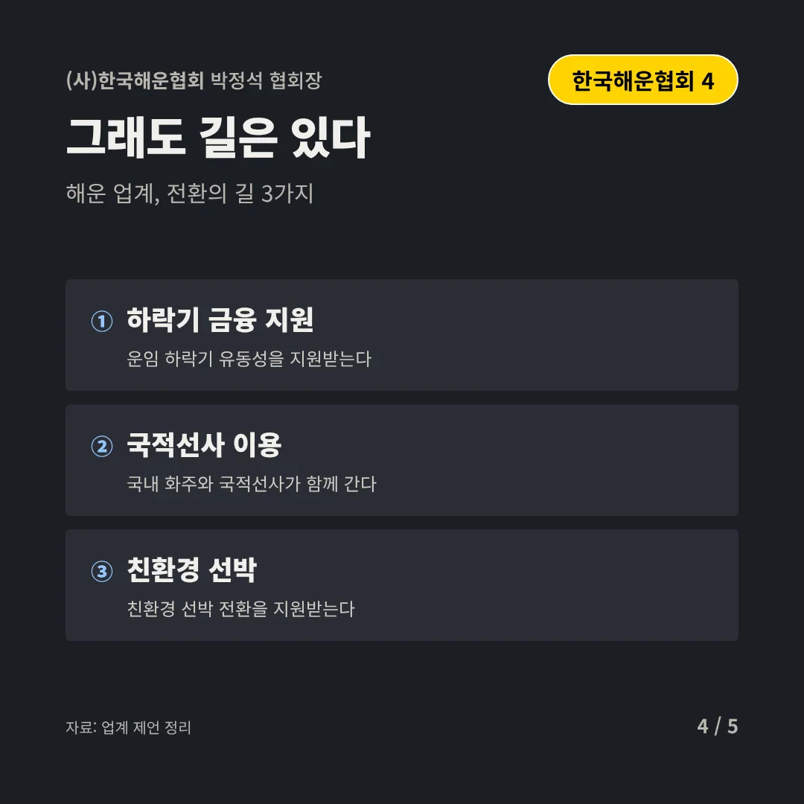
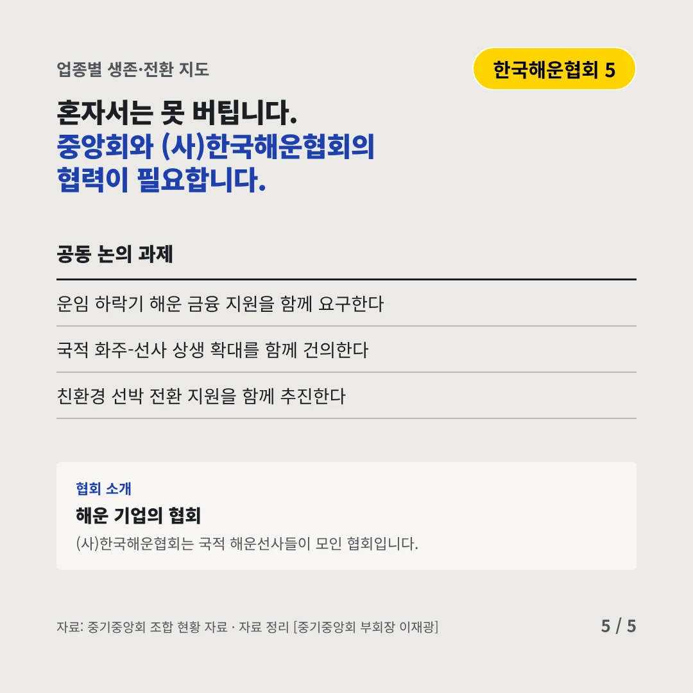
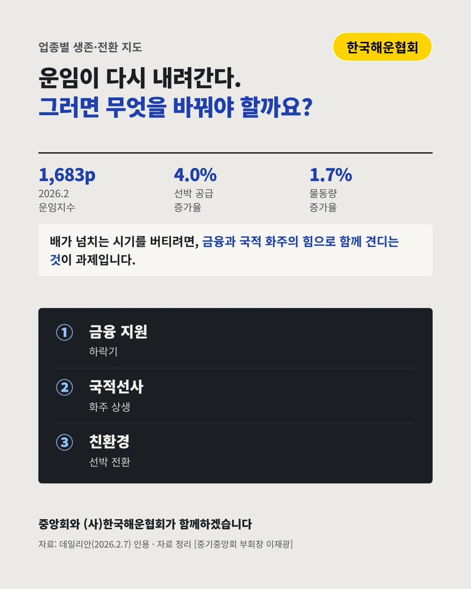

(사)한국해운협회박정석 협회장
배는 늘고 짐은 덜 늘었다, 운임이 다시 내려간다
1,683p 한국형 컨테이너 운임지수(2026.2.2)






홍해 특수가 끝나고 공급 과잉이 왔습니다. 해운 업계는 어디로 가야 할까요?
숫자로 보는 현실
- 4.0%2026년 선박 공급 증가율해양진흥공사 전망
- 1.7%2026년 물동량 증가율공급이 수요를 웃돈다
- 33%발주 잔량전체 컨테이너선단 대비(KMI)
무엇이 바뀌었나
- 운임: 특수가 끝났다홍해 우회로 오른 운임이 내려간다
- 공급: 새 배가 온다발주한 배가 계속 들어온다
- 변수: 앞이 안 보인다관세와 중동 분쟁이 시장을 흔든다
그래도 길은 있다
- 하락기 금융 지원운임 하락기 유동성을 지원받는다
- 국적선사 이용국내 화주와 국적선사가 함께 간다
- 친환경 선박친환경 선박 전환을 지원받는다
한 장 요약

협회 소개
(사)한국해운협회는 국적 해운선사들이 모인 협회입니다.
자료: 데일리안(2026.2.7)